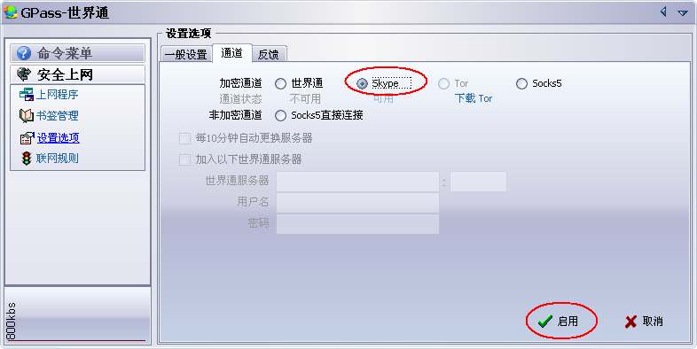
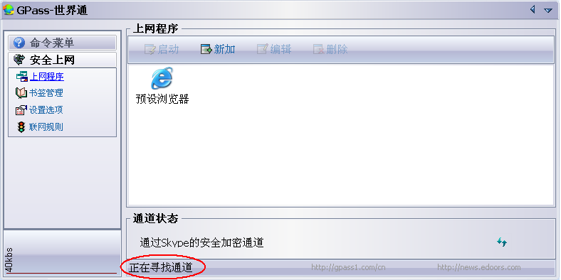
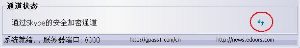

在开讲之前，先祝贺一下大名鼎鼎的方校长（也就是 GFW 它爹）。这家伙前几天在武汉大学，享受了“被人扔鸡蛋/扔鞋”的待遇。在此之前，能够享受如此待遇的党国大员，恐怕也只有爱流泪的影帝温宝宝了。
言归正传，话说天朝最敏感的日子——五月3５日——已经临近了。往年从5月中旬开始，GFW 都会加大封锁的力度，今年也不例外。最近2周，自由门和无界都不太稳定。对俺最大的影响就是——找俺求助的邮件在最近1周猛增。为了免去逐一回复邮件的麻烦，俺今天再给大伙儿普及另外一个翻墙的法子——基于 Skype 翻墙。
由于 QQ 在天朝过于普及，导致很多菜鸟网友，只知道 QQ 这一种聊天工具。所以，俺有必要先普及一下 Skype 的基础知识。已经了解 Skype 的同学，可以跳过这一节。
Skype 是一个 IM（即时通讯）工具。它和其它 IM 相比，最大的特色就是语音通讯的能力。用 Skype 来打电话，既省钱，质量还不差。因为 Skype 本身也是一个 P2P 的软件，它依靠 P2P 技术，来实现语音的高质量传输。
由于 Skype 的上述特点，用户数猛增。近1-2年，Skype 已经超过 MSN Messenger，号称全球用户数最多的 IM 工具（没有之一）。
顺便说一下：就在2周前（11年5月10号），财大气粗的微软宣布以85亿美金收购 Skype。如今 Skype 的新东家已经是微软了。
跟其它翻墙方式相比，Skype 翻墙的显著的好处是——难以彻底封杀。
很多翻墙方式都依赖于设立在海外的代理服务器。如果 GFW 把所有的代理服务器都列入 IP 黑名单，那这种翻墙方式就会失效。自由門 不稳定，可能是因为很多 自由門 的服务器被屏蔽。而 Skype 是基于 P2P 的，Skype 的节点数量巨多，GFW 难以屏蔽所有节点。
另外，Skype 的用户数量很大，貌似国内有上千万用户。退一步说，即使 GFW 能通过技术手段把 Skype 网络彻底干掉，那影响会比较大。因此，党国会有所顾忌。
扫盲完 SKype，开始切入正题。
要用 Skype 翻墙，除了要有 Skype 软件，还得搭配一个基于 Skype 的翻墙工具。目前，有多款翻墙软件都可以通过 Skype 来穿越 GFW。比较老牌的有世界通（洋文叫 ＧPass）和花园网络（洋文叫 ＧTunnel）。考虑到世界通是绿色的，仅有单一的 exe 文件，且 exe 文件带有数字签名。所以，俺下面拿世界通 来举例说明。
第一步，自然是先搞到 Skype 软件。
Skype 有2个版本，一个是国际版，一个是 TOM 版。TOM 版是 Skype 公司跟 TOM 网站合搞的，严格来说，也算是国产的（关于国产 IM 的危险，请翻墙看“这里”的介绍）。俺今天再一次强调：千万别用 TOM 网站提供的 TOM 版 Skype。这个版本是植入后门的，会导致你传输的信息被党国监控。
在天朝，如果你直接访问 Skype 的官网（www.skype.com），会被自动重定向到 TOM 网站。因此，你必须得通过翻墙方式访问官网并下载。如果你无法翻墙上它的官网，可以到国内的软件下载站点去找，很容易找到国际版。
提醒一下，在国内网站找到的 Skype 安装程序，最好要验证一下 exe 文件的数字签名，以免中病毒或木马。不懂得验证数字签名的同学，请翻墙看“这里”的介绍。
安装过程比较简单，俺就不细说了。
装好之后要判断装 Skype 是 TOM 版还是国际版？很简单：只需点菜单"帮助"，再点"关于 Skype"，弹出"关于对话框"。如果在对话框中看到有 TOM 字样，就是 TOM 版；否则，就是国际版。
如果还没有 Skype 帐号，安装结束时会提示你免费注册一个 Skype 用户。
其实，世界通是绿色软件，无须安装滴。
它的官方站点在“这里”（早已被墙）。如果你无法翻墙上它的官网，可以参考俺之前的帖子“获取翻墙软件方法大全”。只要你开动脑筋，总有办法搞到。
再啰嗦一次，世界通的 exe 文件，也是有数字签名的。运行之前，先验证一下，比较保险。
首先，点左边的"设置选项"。然后，你可以看到世界通支持的几种翻墙方式，包括：基于世界通自己的代理服务器、基于 Skype、基于 TOR，基于第三方的 SOCKS 代理。具体请看如下截图。

除了 Skype，另外那几种方式，貌似都不灵光了。所以，你当然要选"Skype"选项，然后点下方的"启用"按钮。接着，点左边的"上网程序"，会看到世界通正在搜索加密通道，如下图所示。这时候，世界通显示在 Windows 系统托盘的图标是灰色的。

一旦世界通搜索到加密通道并建立了加密连接，这时候，世界通会显示如下信息。同时，在系统托盘里的图标会变亮。

有2种方式，可以让某个应用程序利用世界通来翻墙。
1、
在刚才的截图中，你可以点"添加"按钮，把某个程序（比如：IE、Firefox、MSN）加入世界通的上网程序列表中。以后，就可以直接在世界通界面上启动该程序。被世界通启动的程序，就可以通过世界通的加密通道翻墙。
2、
世界通会开启代理端口，端口号 8000（显示在刚才那张截图下方）。以浏览器为例，你可以在浏览器中设置 HTTP 代理，代理的地址设为 127.0.0.1，代理的端口号设为 8000。这样，也可以让浏览器通过世界通翻墙。
由于世界通的数字签名显示为“证书已吊销”。为了保险起见，俺再附上该 ＧPass-4.1.0.exe 文件的散列值如下：
SHA1
0aa2a7cb91df25ea42e5b5345a2281a160f0464f
MD5
62ded78920c5075fbd6ada41ce651bc5
CRC32
7b65c4a6
假如你计算了手头的 exe 文件，各种散列值和上述相符，那就说明你手头的世界通是正宗的（没有中毒、没有被篡改）。
手头没有计算散列值工具的同学，可以到微软官网下载FCIV——该工具可以用来计算 SHA1 和 MD5。
俺最近一周，一直在体验这种翻墙方式。总体感觉是，速度的波动比较大。快的时候，看视频都可以；慢的时候，感觉像在用 Modem 拨号。当你碰到网速慢的时候，可以点"通道状态"里面，靠右边的那个按钮。如下图。

然后世界通就会断开当前连接，重新建立新的可用连接。运气好的话，第一建立的连接就够快；倒霉的话，可能重试了很多次，依然很慢。
假如你用了 Skype 翻墙，速度从来就没快过，那也有可能跟你家或你公司所在的网络环境有关系。
如果你还没有 Skype 帐号，要记得去 Skype 的官方网站（www.skype.com）注册，而不要去“TOM网”注册。
Skype 的官网需要翻墙访问，否则会被自动跳转到 TOM 网站。尚无翻墙能力的同学，可以先找一个 Web 代理。通过 Web 代理访问 Skype 的官网并注册帐号。
如果你翻墙之后仅仅是浏览网页，那倒没啥关系。
假设你跟俺一样，翻墙之后要干一些对不起党国的事情，那就要小心了。在这种情况下，强烈建议你，不要拿自己平常用的 Skype 帐号来翻墙。最好是重新注册一个帐号，专门用于翻墙，比较保险。
碰到关于翻墙的疑难问题，请看俺写的《常见翻墙问题答疑》。
如果还搞不定，也可以直接找俺帮忙。俺的邮箱是：program.think@gmail.com 同样要记得用国外邮箱收发。为了避免被误判为垃圾邮件，请在来信的标题中，体现出“翻墙”的字样。
俺博客上，和本文相关的帖子（需翻墙）：
如何翻墙（传说中的扫盲教程，定期更新）
常见翻墙问题答疑（传说中的FAQ，定期更新）
获取翻墙软件方法大全（教你在无法翻墙的情况下拿到翻墙软件）
扫盲 VPN Gate——分布式的 VPN 服务器
关于 TOR 的常见问题解答
双管齐下的赛风3
自由門——TOR 被封之后的另一个选择
新版本无界——赛风3失效后的另一个选择
扫盲 VPN 翻墙——以 Hotspot Shield 为例
戴“套”翻墻的方法
简单扫盲 I2P 的使用
言归正传，话说天朝最敏感的日子——五月3５日——已经临近了。往年从5月中旬开始，GFW 都会加大封锁的力度，今年也不例外。最近2周，自由门和无界都不太稳定。对俺最大的影响就是——找俺求助的邮件在最近1周猛增。为了免去逐一回复邮件的麻烦，俺今天再给大伙儿普及另外一个翻墙的法子——基于 Skype 翻墙。
★Skype 是啥？
由于 QQ 在天朝过于普及，导致很多菜鸟网友，只知道 QQ 这一种聊天工具。所以，俺有必要先普及一下 Skype 的基础知识。已经了解 Skype 的同学，可以跳过这一节。
Skype 是一个 IM（即时通讯）工具。它和其它 IM 相比，最大的特色就是语音通讯的能力。用 Skype 来打电话，既省钱，质量还不差。因为 Skype 本身也是一个 P2P 的软件，它依靠 P2P 技术，来实现语音的高质量传输。
由于 Skype 的上述特点，用户数猛增。近1-2年，Skype 已经超过 MSN Messenger，号称全球用户数最多的 IM 工具（没有之一）。
顺便说一下：就在2周前（11年5月10号），财大气粗的微软宣布以85亿美金收购 Skype。如今 Skype 的新东家已经是微软了。
★为啥俺推荐 Skype 翻墙？
跟其它翻墙方式相比，Skype 翻墙的显著的好处是——难以彻底封杀。
很多翻墙方式都依赖于设立在海外的代理服务器。如果 GFW 把所有的代理服务器都列入 IP 黑名单，那这种翻墙方式就会失效。自由門 不稳定，可能是因为很多 自由門 的服务器被屏蔽。而 Skype 是基于 P2P 的，Skype 的节点数量巨多，GFW 难以屏蔽所有节点。
另外，Skype 的用户数量很大，貌似国内有上千万用户。退一步说，即使 GFW 能通过技术手段把 Skype 网络彻底干掉，那影响会比较大。因此，党国会有所顾忌。
★操作步骤
扫盲完 SKype，开始切入正题。
要用 Skype 翻墙，除了要有 Skype 软件，还得搭配一个基于 Skype 的翻墙工具。目前，有多款翻墙软件都可以通过 Skype 来穿越 GFW。比较老牌的有世界通（洋文叫 ＧPass）和花园网络（洋文叫 ＧTunnel）。考虑到世界通是绿色的，仅有单一的 exe 文件，且 exe 文件带有数字签名。所以，俺下面拿世界通 来举例说明。
◇找到 Skype 的国际版
第一步，自然是先搞到 Skype 软件。
Skype 有2个版本，一个是国际版，一个是 TOM 版。TOM 版是 Skype 公司跟 TOM 网站合搞的，严格来说，也算是国产的（关于国产 IM 的危险，请翻墙看“这里”的介绍）。俺今天再一次强调：千万别用 TOM 网站提供的 TOM 版 Skype。这个版本是植入后门的，会导致你传输的信息被党国监控。
在天朝，如果你直接访问 Skype 的官网（www.skype.com），会被自动重定向到 TOM 网站。因此，你必须得通过翻墙方式访问官网并下载。如果你无法翻墙上它的官网，可以到国内的软件下载站点去找，很容易找到国际版。
提醒一下，在国内网站找到的 Skype 安装程序，最好要验证一下 exe 文件的数字签名，以免中病毒或木马。不懂得验证数字签名的同学，请翻墙看“这里”的介绍。
◇安装 Skype
安装过程比较简单，俺就不细说了。
装好之后要判断装 Skype 是 TOM 版还是国际版？很简单：只需点菜单"帮助"，再点"关于 Skype"，弹出"关于对话框"。如果在对话框中看到有 TOM 字样，就是 TOM 版；否则，就是国际版。
如果还没有 Skype 帐号，安装结束时会提示你免费注册一个 Skype 用户。
◇安装世界通
其实，世界通是绿色软件，无须安装滴。
它的官方站点在“这里”（早已被墙）。如果你无法翻墙上它的官网，可以参考俺之前的帖子“获取翻墙软件方法大全”。只要你开动脑筋，总有办法搞到。
再啰嗦一次，世界通的 exe 文件，也是有数字签名的。运行之前，先验证一下，比较保险。
◇配置世界通
首先，点左边的"设置选项"。然后，你可以看到世界通支持的几种翻墙方式，包括：基于世界通自己的代理服务器、基于 Skype、基于 TOR，基于第三方的 SOCKS 代理。具体请看如下截图。
除了 Skype，另外那几种方式，貌似都不灵光了。所以，你当然要选"Skype"选项，然后点下方的"启用"按钮。接着，点左边的"上网程序"，会看到世界通正在搜索加密通道，如下图所示。这时候，世界通显示在 Windows 系统托盘的图标是灰色的。
一旦世界通搜索到加密通道并建立了加密连接，这时候，世界通会显示如下信息。同时，在系统托盘里的图标会变亮。
◇让应用程序基于世界通翻墙
有2种方式，可以让某个应用程序利用世界通来翻墙。
1、
在刚才的截图中，你可以点"添加"按钮，把某个程序（比如：IE、Firefox、MSN）加入世界通的上网程序列表中。以后，就可以直接在世界通界面上启动该程序。被世界通启动的程序，就可以通过世界通的加密通道翻墙。
2、
世界通会开启代理端口，端口号 8000（显示在刚才那张截图下方）。以浏览器为例，你可以在浏览器中设置 HTTP 代理，代理的地址设为 127.0.0.1，代理的端口号设为 8000。这样，也可以让浏览器通过世界通翻墙。
★一些注意事项
◇关于 exe 文件的数字签名
由于世界通的数字签名显示为“证书已吊销”。为了保险起见，俺再附上该 ＧPass-4.1.0.exe 文件的散列值如下：
SHA1
0aa2a7cb91df25ea42e5b5345a2281a160f0464f
MD5
62ded78920c5075fbd6ada41ce651bc5
CRC32
7b65c4a6
假如你计算了手头的 exe 文件，各种散列值和上述相符，那就说明你手头的世界通是正宗的（没有中毒、没有被篡改）。
手头没有计算散列值工具的同学，可以到微软官网下载FCIV——该工具可以用来计算 SHA1 和 MD5。
◇关于网速
俺最近一周，一直在体验这种翻墙方式。总体感觉是，速度的波动比较大。快的时候，看视频都可以；慢的时候，感觉像在用 Modem 拨号。当你碰到网速慢的时候，可以点"通道状态"里面，靠右边的那个按钮。如下图。
然后世界通就会断开当前连接，重新建立新的可用连接。运气好的话，第一建立的连接就够快；倒霉的话，可能重试了很多次，依然很慢。
假如你用了 Skype 翻墙，速度从来就没快过，那也有可能跟你家或你公司所在的网络环境有关系。
◇关于 Skype 帐号的申请
如果你还没有 Skype 帐号，要记得去 Skype 的官方网站（www.skype.com）注册，而不要去“TOM网”注册。
Skype 的官网需要翻墙访问，否则会被自动跳转到 TOM 网站。尚无翻墙能力的同学，可以先找一个 Web 代理。通过 Web 代理访问 Skype 的官网并注册帐号。
◇关于 Skype 帐号的安全
如果你翻墙之后仅仅是浏览网页，那倒没啥关系。
假设你跟俺一样，翻墙之后要干一些对不起党国的事情，那就要小心了。在这种情况下，强烈建议你，不要拿自己平常用的 Skype 帐号来翻墙。最好是重新注册一个帐号，专门用于翻墙，比较保险。
◇关于其它的翻墙问题
碰到关于翻墙的疑难问题，请看俺写的《常见翻墙问题答疑》。
如果还搞不定，也可以直接找俺帮忙。俺的邮箱是：program.think@gmail.com 同样要记得用国外邮箱收发。为了避免被误判为垃圾邮件，请在来信的标题中，体现出“翻墙”的字样。
俺博客上，和本文相关的帖子（需翻墙）：
如何翻墙（传说中的扫盲教程，定期更新）
常见翻墙问题答疑（传说中的FAQ，定期更新）
获取翻墙软件方法大全（教你在无法翻墙的情况下拿到翻墙软件）
扫盲 VPN Gate——分布式的 VPN 服务器
关于 TOR 的常见问题解答
双管齐下的赛风3
自由門——TOR 被封之后的另一个选择
新版本无界——赛风3失效后的另一个选择
扫盲 VPN 翻墙——以 Hotspot Shield 为例
戴“套”翻墻的方法
简单扫盲 I2P 的使用
版权声明
本博客所有的原创文章，作者皆保留版权。转载必须包含本声明，保持本文完整，并以超链接形式注明作者编程随想和本文原始地址：
https://program-think.blogspot.com/2011/05/through-gfw-with-skype.html
本博客所有的原创文章，作者皆保留版权。转载必须包含本声明，保持本文完整，并以超链接形式注明作者编程随想和本文原始地址：
https://program-think.blogspot.com/2011/05/through-gfw-with-skype.html